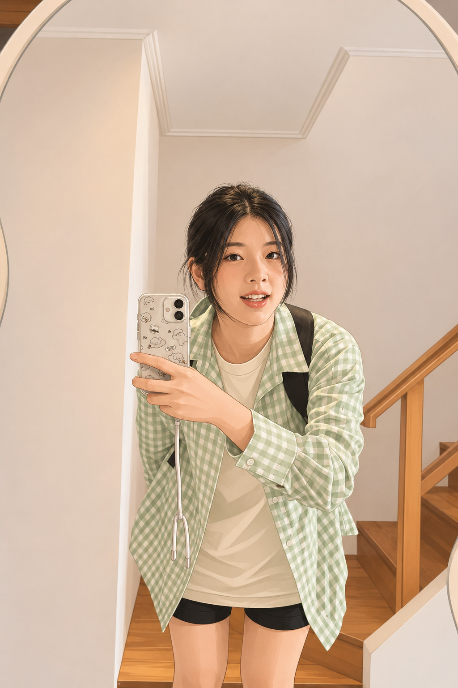

廣告與傳播
ADVERTISING & COMMUNICATION
探索品牌、溝通及創意表達，理解訊息如何與不同的人產生連結。
CREATIVE THINKING你好，我是
A curious mind, across two disciplines.
國立政治大學三年級
廣告學系 × 法律學系雙主修
在創意表達與理性思辨之間，探索不同領域的觀點與可能。

A little more about me.
「用不同的視角理解世界，
在跨領域的學習中持續成長。」
我是陳怡薰，目前就讀於國立政治大學三年級，主修廣告學系，並雙主修法律學系。
對我而言，廣告帶來創意與溝通的視角，法律則培養分析問題、理解規範的思考方式。我希望透過持續學習，找到兩種領域之間更多有趣的連結。
從不同領域出發，練習用多元的角度觀察與思考。
ADVERTISING & COMMUNICATION
探索品牌、溝通及創意表達，理解訊息如何與不同的人產生連結。
CREATIVE THINKINGLAW & CRITICAL THINKING
透過法律學習訓練邏輯分析與論證能力，從不同立場理解問題。
ANALYTICAL THINKINGINTERDISCIPLINARY EXPLORATION
將創意與理性思考並行，持續尋找不同知識之間的交會點。
KEEP EXPLORING這裡將陸續記錄課堂專題、作品與學習歷程。
未來可以放入品牌企劃、廣告設計或課堂專案，記錄發想與執行過程。
待補充作品未來可以整理課堂研究、報告或個人筆記，展示分析與學習的歷程。
待補充作品※ 以上為預留展示區塊，尚未表示已有實際完成的作品或經歷。可直接編輯 index.html 替換。
歡迎透過電子郵件與我交流。